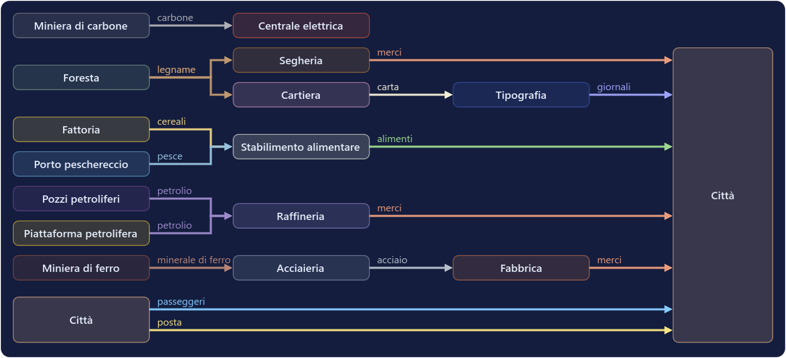
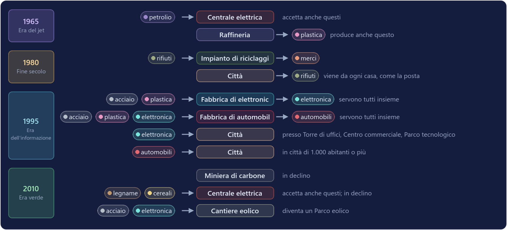

Filiere industriali
Cosa va dove.
Le materie prime vanno a un impianto che le trasforma in qualcosa che serve alle città. Ogni freccia è una consegna per cui vieni pagato, quindi una filiera intera paga più di una volta. Queste sono le filiere di una partita iniziata nel 1950:


- Un impianto trasforma ogni unità consegnata in circa un'unità di prodotto, pronta da ritirare qualche giorno dopo: di più con il personale al completo, di meno con pochi lavoratori (vedi Lavoratori).
- Il carbone finisce alla centrale elettrica: non ne esce niente.
- Il legname ha due clienti: la segheria ne fa merci, la cartiera carta per la tipografia, che sorge accanto a una delle città più grandi.
- I giornali invecchiano dopo 2 giorni, quindi trasportali in fretta: li caricano camion, automotrici e aerei postali. Li accetta ogni casa di una città di 150 abitanti o più.
- Ogni tanto un'industria cambia la sua produzione. Se gran parte del suo carico viene trasportato, o ha molto personale, è molto più probabile che cresca che non che cali.
- La Mappa del mondo (M) mostra dove potrebbe consegnare ogni industria della tua mappa.
Le epoche cambiano le catene
Ogni nuova epoca porta nuove industrie e dà nuovo carico a quelle vecchie. Un nuovo tipo di industria apre sulla mappa all'inizio della sua epoca (in una partita iniziata più tardi c'è fin dall'inizio).


- Due materiali: la fabbrica di elettronica ha bisogno di acciaio e plastica insieme. Tiene ciò che porti finché non arriva l'altro, e ogni tonnellata di acciaio con una di plastica dà circa due casse di elettronica.
- I rifiuti arrivano da ogni casa nel bacino di una stazione, come la posta. Un impianto di riciclaggio li trasforma in merci.
- L'elettronica rende bene ma scade in pochi giorni: camion veloci, treni o aerei cargo.
- Tre materiali: la fabbrica di automobili ha bisogno di acciaio, plastica ed elettronica insieme, e con un'unità di ciascuno fa circa tre automobili. La sua finestra dice quale materiale la frena.
- Le automobili rendono bene ma sono ingombranti: le portano solo il Atlas Car Transporter e i carri bisarca, 10 per carro. Le città di almeno 1.000 abitanti le accettano.
- I cantieri eolici hanno bisogno che vengano consegnati 1.000 tonnellate di acciaio e 600 casse di elettronica; quando arriva tutto, il cantiere diventa un parco eolico. Le città entro 24 caselle aspettano allora solo il 80% del tempo tra uno scatto e l'altro, e le compagnie che hanno consegnato si dividono fino a +25 di valutazione presso i loro consigli, in base a quanto ha portato ciascuna.
Aperture e chiusure
- Ogni pochi anni apre una nuova industria, di qualunque tipo ci sia sulla mappa: una miniera, fattoria, foresta, pozzo, piattaforma o porto dove c'è posto, un impianto vicino a chi produce ciò che accetta. Non sorge mai su qualcosa di costruito.
- Quando un'era porta un nuovo tipo di industria, ne apre una ogni mese finché la mappa non ha la sua quota.
- Una miniera, una fattoria o un pozzo che nessuno serve da due anni, e la cui produzione è scesa al 75% del solito, può entrare in difficoltà. Quello a corto di personale è il primo.
- Le notizie avvisano un anno prima della chiusura, e la sua finestra e la sua scheda dicono quando. Trasportane il carico prima e non chiuderà.
- Gli impianti non chiudono mai (a parte le centrali elettriche, più sotto), e nemmeno l'ultima industria di un tipo, così ogni filiera resta possibile.
- Le industrie in declino non aprono più. Dal 2010, anche una centrale elettrica che nessuno rifornisce da due anni può andare in difficoltà e chiudere.
- Quando una chiude, le stazioni vicine smettono di fornirne il carico, e i rivali abbandonano le linee che la servivano. Una piattaforma petrolifera si porta via il suo molo.
Quanto produce ogni industria è in Tabella delle industrie.